Summary
This experiment investigates sheep shearing technique. Central composite design to maximize wool quality and minimize nicks by tuning comb tooth count, cutter speed, and blow angle.
The design varies 3 factors: comb teeth (teeth), ranging from 9 to 17, cutter rpm (rpm), ranging from 2000 to 3500, and blow angle deg (deg), ranging from 10 to 40. The goal is to optimize 2 responses: staple length cm (cm) (maximize) and nick count (per_sheep) (minimize). Fixed conditions held constant across all runs include breed = merino, season = spring.
A Central Composite Design (CCD) was selected to fit a full quadratic response surface model, including curvature and interaction effects. With 3 factors this produces 22 runs including center points and axial (star) points that extend beyond the factorial range.
Quadratic response surface models were fitted to capture potential curvature and factor interactions. The RSM contour plots below visualize how pairs of factors jointly affect each response.
Key Findings
For staple length cm, the most influential factors were blow angle deg (34.4%), comb teeth (34.4%), cutter rpm (31.3%). The best observed value was 9.2 (at comb teeth = 13, cutter rpm = 2750, blow angle deg = 25).
For nick count, the most influential factors were blow angle deg (47.3%), comb teeth (41.9%), cutter rpm (10.9%). The best observed value was 2.3 (at comb teeth = 9, cutter rpm = 2000, blow angle deg = 40).
Recommended Next Steps
- Run confirmation experiments at the predicted optimal settings to validate the model.
- Consider whether any fixed factors should be varied in a future study.
Experimental Setup
Factors
| Factor | Low | High | Unit |
|---|
comb_teeth | 9 | 17 | teeth |
cutter_rpm | 2000 | 3500 | rpm |
blow_angle_deg | 10 | 40 | deg |
Fixed: breed = merino, season = spring
Responses
| Response | Direction | Unit |
|---|
staple_length_cm | ↑ maximize | cm |
nick_count | ↓ minimize | per_sheep |
Configuration
{
"metadata": {
"name": "Sheep Shearing Technique",
"description": "Central composite design to maximize wool quality and minimize nicks by tuning comb tooth count, cutter speed, and blow angle"
},
"factors": [
{
"name": "comb_teeth",
"levels": [
"9",
"17"
],
"type": "continuous",
"unit": "teeth"
},
{
"name": "cutter_rpm",
"levels": [
"2000",
"3500"
],
"type": "continuous",
"unit": "rpm"
},
{
"name": "blow_angle_deg",
"levels": [
"10",
"40"
],
"type": "continuous",
"unit": "deg"
}
],
"fixed_factors": {
"breed": "merino",
"season": "spring"
},
"responses": [
{
"name": "staple_length_cm",
"optimize": "maximize",
"unit": "cm"
},
{
"name": "nick_count",
"optimize": "minimize",
"unit": "per_sheep"
}
],
"settings": {
"operation": "central_composite",
"test_script": "use_cases/292_sheep_shearing/sim.sh"
}
}
Experimental Matrix
The Central Composite Design produces 22 runs. Each row is one experiment with specific factor settings.
| Run | comb_teeth | cutter_rpm | blow_angle_deg |
|---|
| 1 | 13 | 2750 | 25 |
| 2 | 17 | 2000 | 40 |
| 3 | 9 | 3500 | 10 |
| 4 | 13 | 4119.31 | 25 |
| 5 | 13 | 2750 | 25 |
| 6 | 5.69703 | 2750 | 25 |
| 7 | 13 | 2750 | -2.38613 |
| 8 | 13 | 2750 | 25 |
| 9 | 17 | 3500 | 10 |
| 10 | 20.303 | 2750 | 25 |
| 11 | 13 | 2750 | 25 |
| 12 | 13 | 1380.69 | 25 |
| 13 | 13 | 2750 | 25 |
| 14 | 9 | 2000 | 40 |
| 15 | 13 | 2750 | 25 |
| 16 | 17 | 2000 | 10 |
| 17 | 13 | 2750 | 52.3861 |
| 18 | 17 | 3500 | 40 |
| 19 | 13 | 2750 | 25 |
| 20 | 9 | 2000 | 10 |
| 21 | 9 | 3500 | 40 |
| 22 | 13 | 2750 | 25 |
Step-by-Step Workflow
1
Preview the design
$ doe info --config use_cases/292_sheep_shearing/config.json
2
Generate the runner script
$ doe generate --config use_cases/292_sheep_shearing/config.json \
--output use_cases/292_sheep_shearing/results/run.sh --seed 42
3
Execute the experiments
$ bash use_cases/292_sheep_shearing/results/run.sh
4
Analyze results
$ doe analyze --config use_cases/292_sheep_shearing/config.json
5
Get optimization recommendations
$ doe optimize --config use_cases/292_sheep_shearing/config.json
6
Multi-objective optimization
With 2 competing responses, use --multi to find the best compromise via Derringer–Suich desirability.
$ doe optimize --config use_cases/292_sheep_shearing/config.json --multi
7
Generate the HTML report
$ doe report --config use_cases/292_sheep_shearing/config.json \
--output use_cases/292_sheep_shearing/results/report.html
Features Exercised
| Feature | Value |
|---|
| Design type | central_composite |
| Factor types | continuous (all 3) |
| Arg style | double-dash |
| Responses | 2 (staple_length_cm ↑, nick_count ↓) |
| Total runs | 22 |
Analysis Results
Generated from actual experiment runs using the DOE Helper Tool.
Response: staple_length_cm
Top factors: blow_angle_deg (34.4%), comb_teeth (34.4%), cutter_rpm (31.3%).
ANOVA
| Source | DF | SS | MS | F | p-value |
|---|
| Source | DF | SS | MS | F | p-value |
| comb_teeth | 4 | 1.2682 | 0.3170 | 0.498 | 0.7386 |
| cutter_rpm | 4 | 2.5007 | 0.6252 | 0.981 | 0.4643 |
| blow_angle_deg | 4 | 3.0615 | 0.7654 | 1.201 | 0.3743 |
| Lack | of | Fit | 2 | 0.9078 | 0.4539 |
| Pure | Error | 7 | 4.4600 | | |
| Error | 9 | 5.3678 | 0.6371 | | |
| Total | 21 | 12.1982 | 0.5809 | | |
Pareto Chart
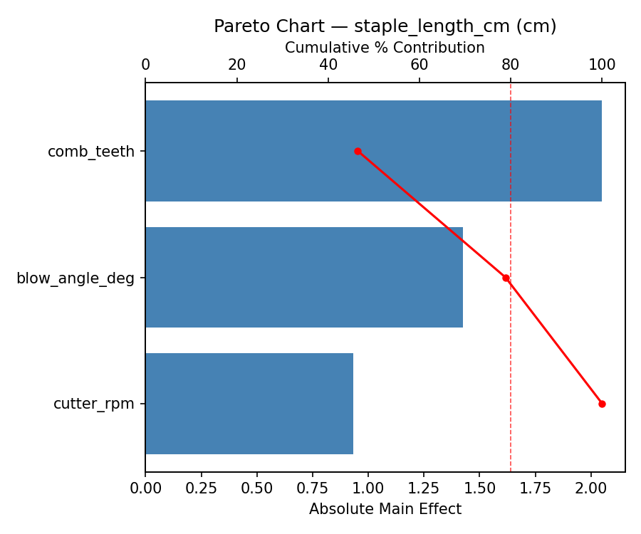
Main Effects Plot
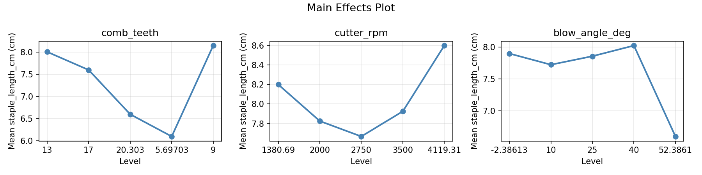
Normal Probability Plot of Effects
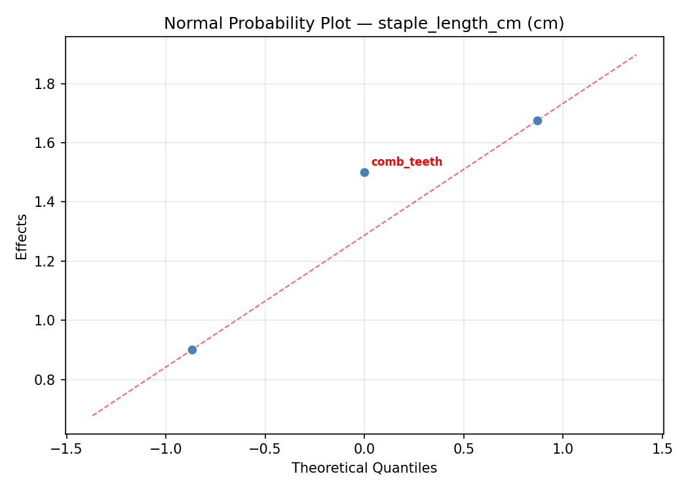
Half-Normal Plot of Effects
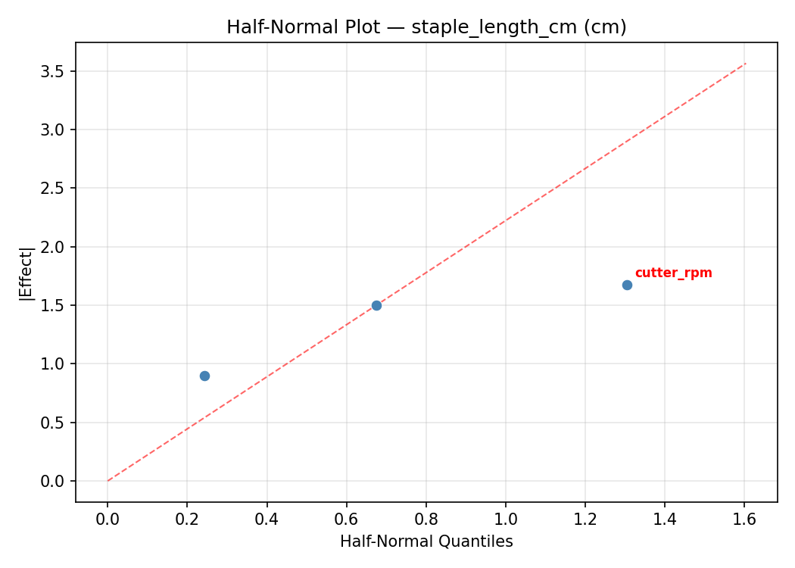
Model Diagnostics
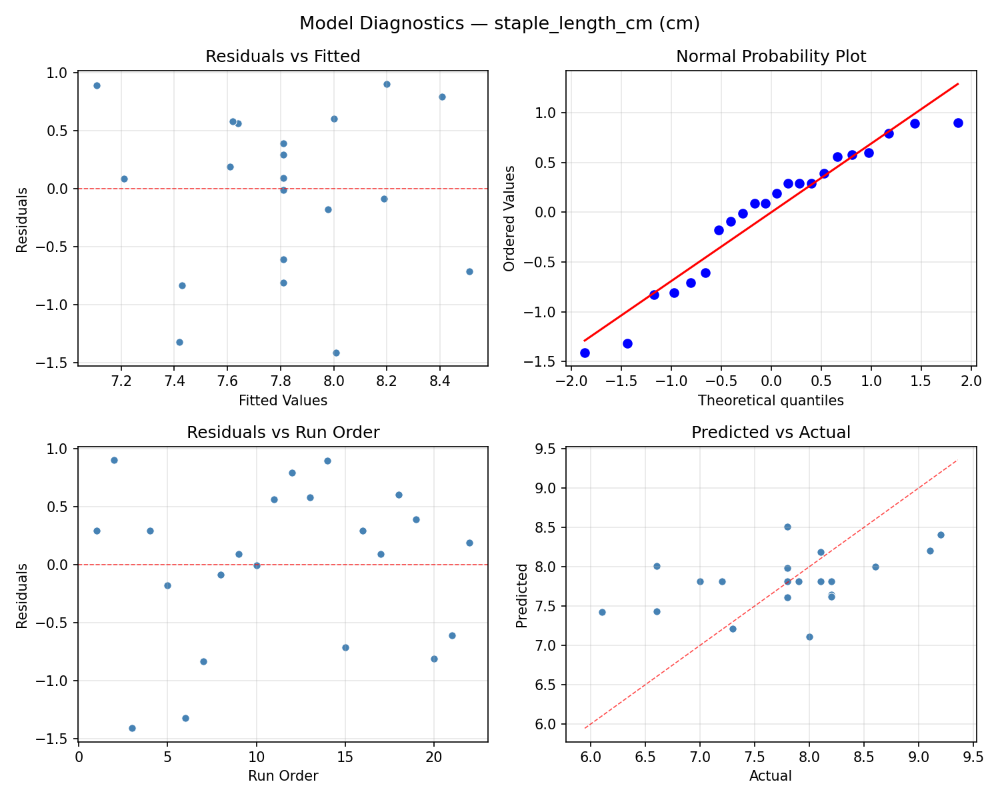
Response: nick_count
Top factors: blow_angle_deg (47.3%), comb_teeth (41.9%), cutter_rpm (10.9%).
ANOVA
| Source | DF | SS | MS | F | p-value |
|---|
| Source | DF | SS | MS | F | p-value |
| comb_teeth | 4 | 1.7277 | 0.4319 | 0.776 | 0.5676 |
| cutter_rpm | 4 | 0.3036 | 0.0759 | 0.136 | 0.9647 |
| blow_angle_deg | 4 | 2.1911 | 0.5478 | 0.984 | 0.4628 |
| Lack | of | Fit | 2 | 1.3104 | 0.6552 |
| Pure | Error | 7 | 3.8950 | | |
| Error | 9 | 5.2054 | 0.5564 | | |
| Total | 21 | 9.4277 | 0.4489 | | |
Pareto Chart
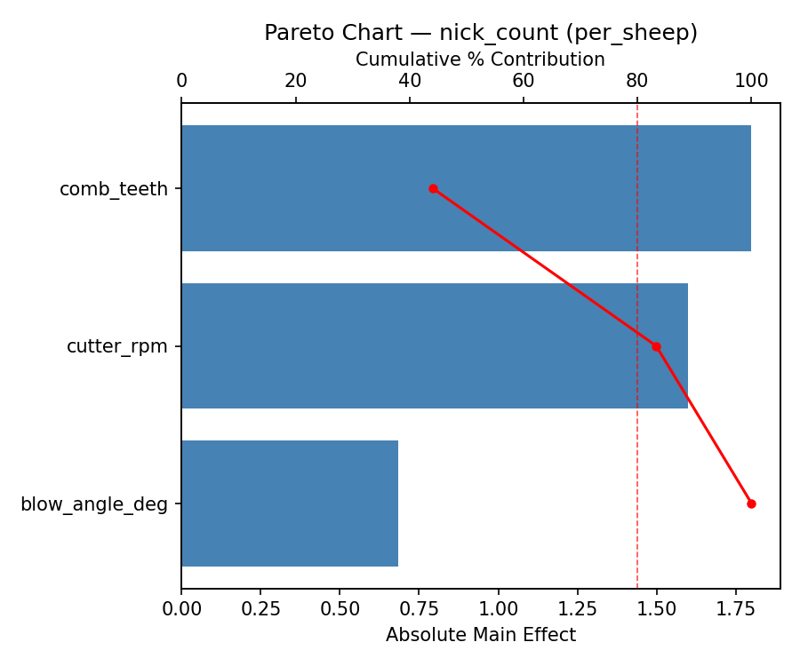
Main Effects Plot
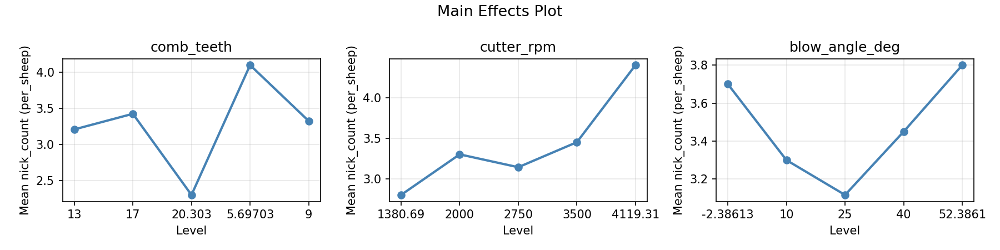
Normal Probability Plot of Effects
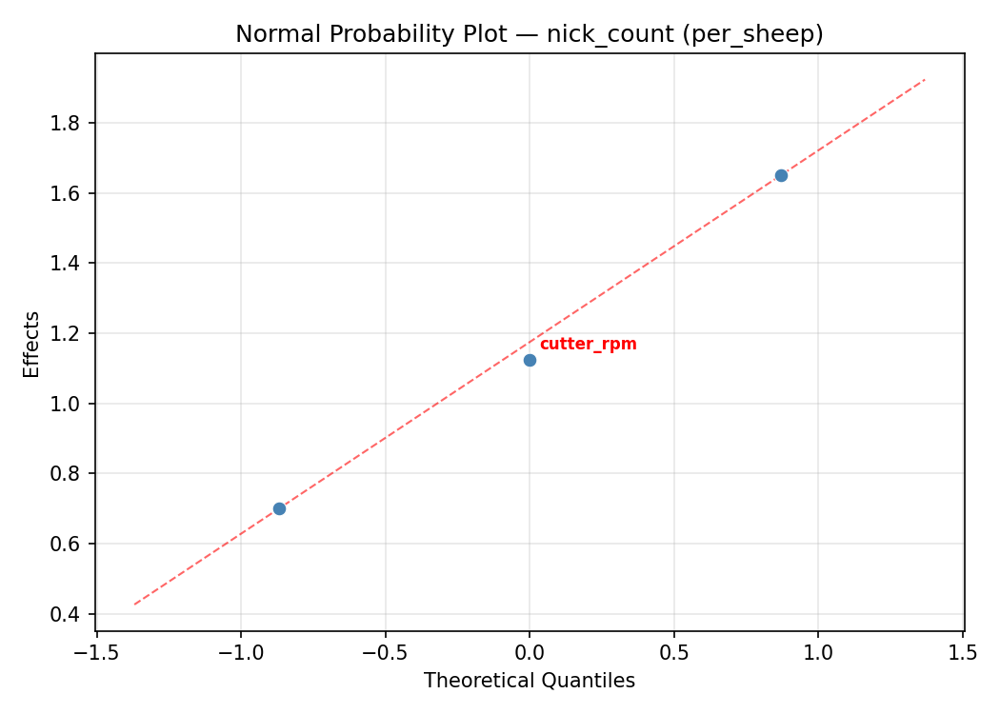
Half-Normal Plot of Effects
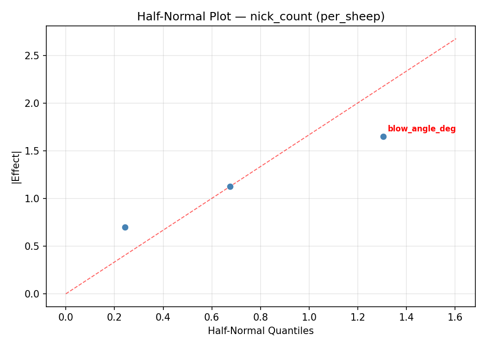
Model Diagnostics
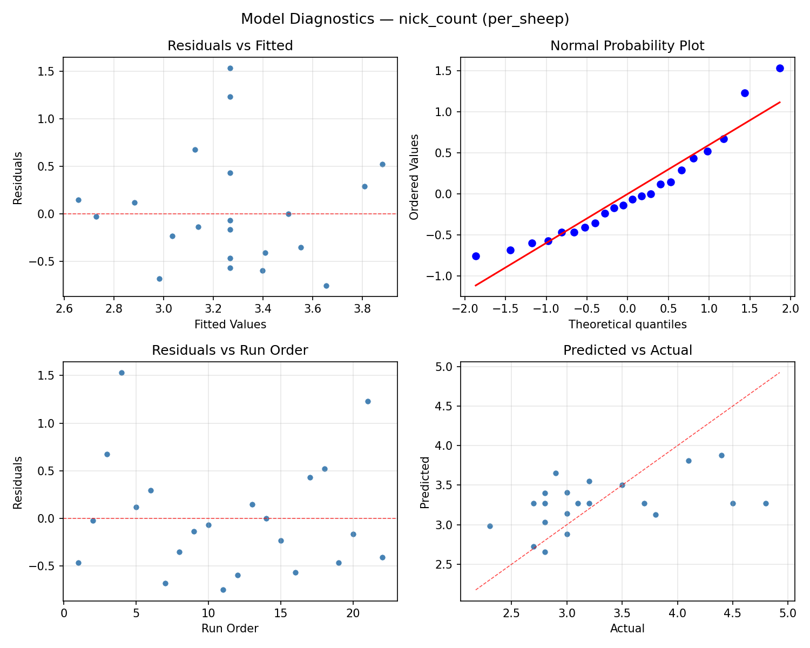
Response Surface Plots
3D surfaces fitted with quadratic RSM. Red dots are observed data points.
nick count comb teeth vs blow angle deg
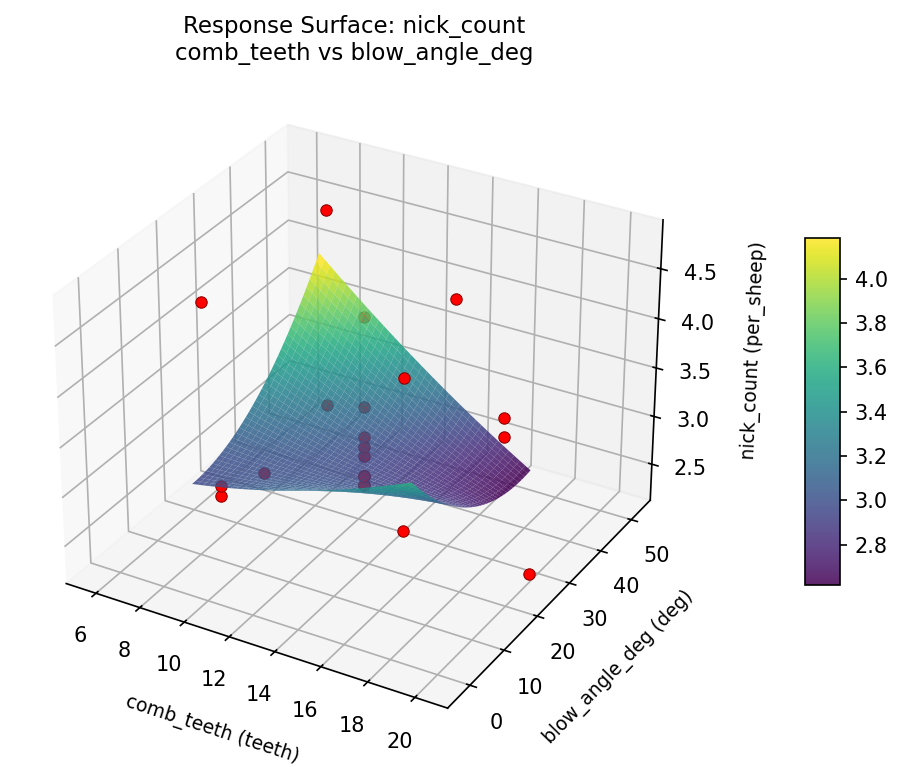
nick count comb teeth vs cutter rpm
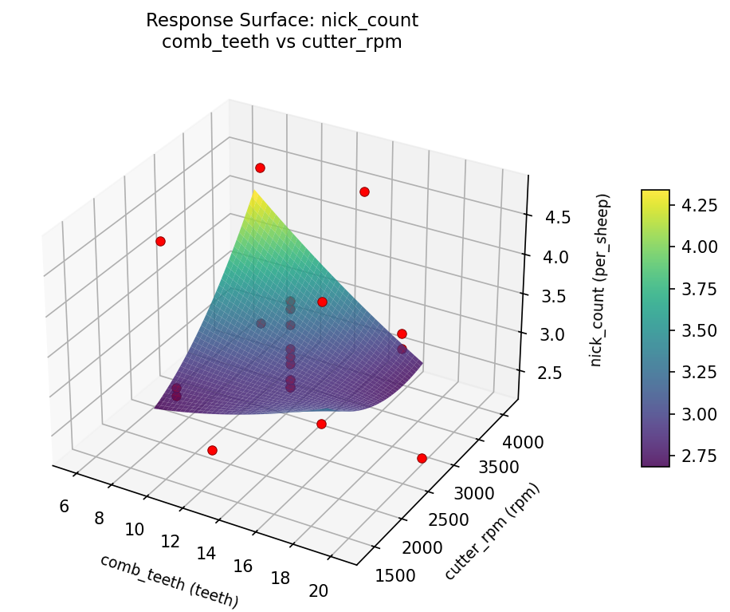
nick count cutter rpm vs blow angle deg
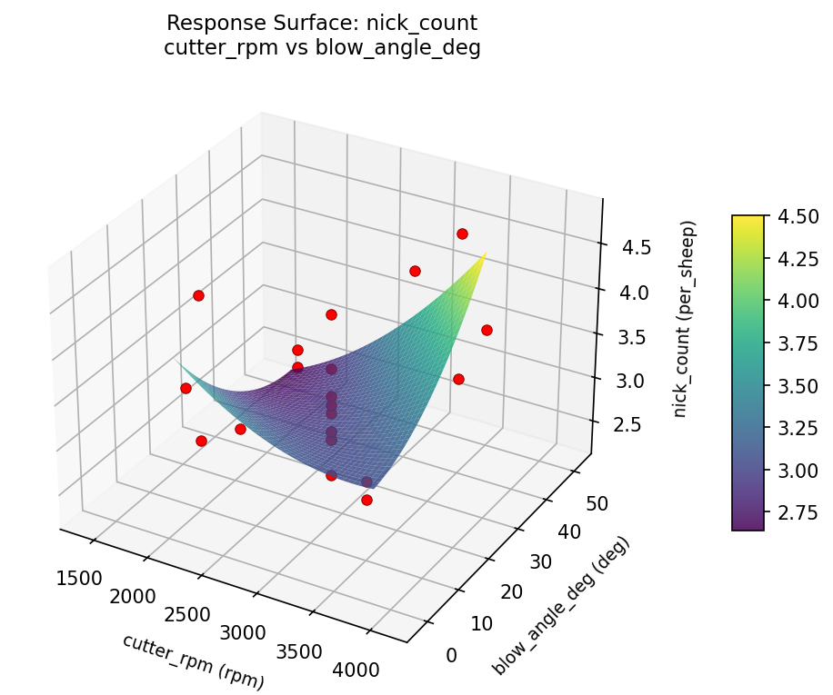
staple length cm comb teeth vs blow angle deg
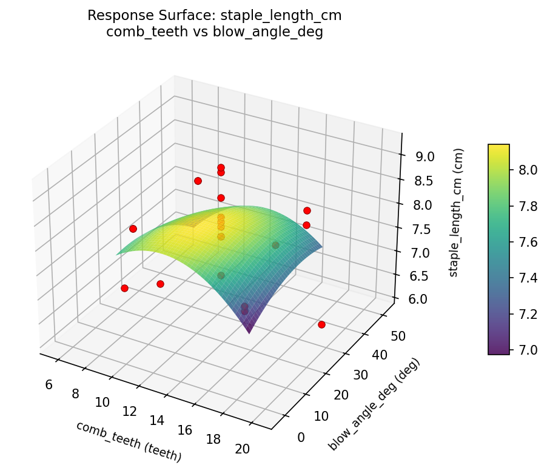
staple length cm comb teeth vs cutter rpm
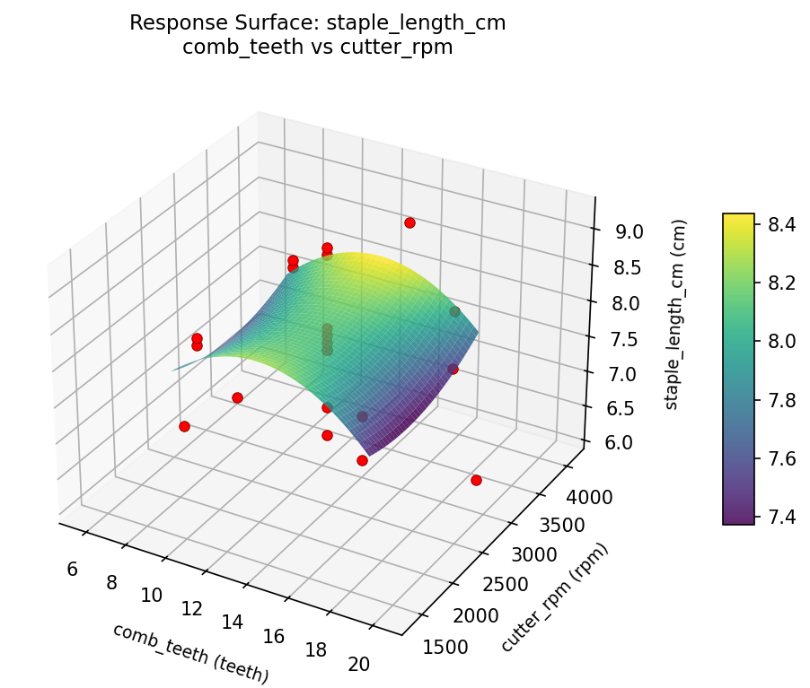
staple length cm cutter rpm vs blow angle deg
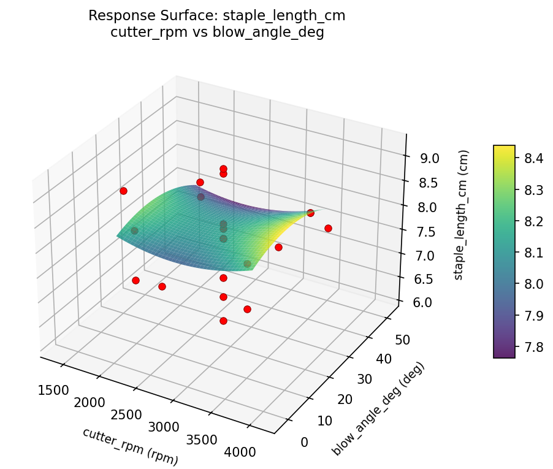
Multi-Objective Optimization
When responses compete, Derringer–Suich desirability finds the best compromise.
Each response is scaled to a 0–1 desirability, then combined via a weighted geometric mean.
Overall Desirability
D = 0.8772
Per-Response Desirability
| Response | Weight | Desirability | Predicted | Dir |
|---|
staple_length_cm |
1.5 |
|
9.20 0.9545 9.20 cm |
↑ |
nick_count |
1.0 |
|
2.80 0.7727 2.80 per_sheep |
↓ |
Recommended Settings
| Factor | Value |
|---|
comb_teeth | 13 teeth |
cutter_rpm | 2750 rpm |
blow_angle_deg | 25 deg |
Source: from observed run #12
Trade-off Summary
Sacrifice = how much worse than single-objective best.
| Response | Predicted | Best Observed | Sacrifice |
|---|
nick_count | 2.80 | 2.30 | +0.50 |
Top 3 Runs by Desirability
| Run | D | Factor Settings |
|---|
| #2 | 0.8769 | comb_teeth=9, cutter_rpm=3500, blow_angle_deg=40 |
| #13 | 0.7038 | comb_teeth=13, cutter_rpm=2750, blow_angle_deg=25 |
Model Quality
| Response | R² | Type |
|---|
nick_count | 0.1726 | linear |
Full Multi-Objective Output
============================================================
MULTI-OBJECTIVE OPTIMIZATION
Method: Derringer-Suich Desirability Function
============================================================
Overall desirability: D = 0.8772
Response Weight Desirability Predicted Direction
---------------------------------------------------------------------
staple_length_cm 1.5 0.9545 9.20 cm ↑
nick_count 1.0 0.7727 2.80 per_sheep ↓
Recommended settings:
comb_teeth = 13 teeth
cutter_rpm = 2750 rpm
blow_angle_deg = 25 deg
(from observed run #12)
Trade-off summary:
staple_length_cm: 9.20 (best observed: 9.20, sacrifice: +0.00)
nick_count: 2.80 (best observed: 2.30, sacrifice: +0.50)
Model quality:
staple_length_cm: R² = 0.0439 (linear)
nick_count: R² = 0.1726 (linear)
Top 3 observed runs by overall desirability:
1. Run #12 (D=0.8772): comb_teeth=13, cutter_rpm=2750, blow_angle_deg=25
2. Run #2 (D=0.8769): comb_teeth=9, cutter_rpm=3500, blow_angle_deg=40
3. Run #13 (D=0.7038): comb_teeth=13, cutter_rpm=2750, blow_angle_deg=25
Full Analysis Output
=== Main Effects: staple_length_cm ===
Factor Effect Std Error % Contribution
--------------------------------------------------------------
blow_angle_deg 1.1250 0.1625 34.4%
comb_teeth 1.1250 0.1625 34.4%
cutter_rpm 1.0250 0.1625 31.3%
=== ANOVA Table: staple_length_cm ===
Source DF SS MS F p-value
-----------------------------------------------------------------------------
comb_teeth 4 1.2682 0.3170 0.498 0.7386
cutter_rpm 4 2.5007 0.6252 0.981 0.4643
blow_angle_deg 4 3.0615 0.7654 1.201 0.3743
Lack of Fit 2 0.9078 0.4539 0.712 0.5229
Pure Error 7 4.4600 0.6371
Error 9 5.3678 0.6371
Total 21 12.1982 0.5809
=== Summary Statistics: staple_length_cm ===
comb_teeth:
Level N Mean Std Min Max
------------------------------------------------------------
13 12 7.7750 0.6837 6.6000 9.2000
17 4 7.4750 0.9251 6.1000 8.1000
20.303 1 8.6000 0.0000 8.6000 8.6000
5.69703 1 8.0000 0.0000 8.0000 8.0000
9 4 8.0000 1.0360 6.6000 9.1000
cutter_rpm:
Level N Mean Std Min Max
------------------------------------------------------------
1380.69 1 7.8000 0.0000 7.8000 7.8000
2000 4 8.2500 0.5916 7.8000 9.1000
2750 12 7.9000 0.7045 6.6000 9.2000
3500 4 7.2250 1.0308 6.1000 8.1000
4119.31 1 7.3000 0.0000 7.3000 7.3000
blow_angle_deg:
Level N Mean Std Min Max
------------------------------------------------------------
-2.38613 1 7.2000 0.0000 7.2000 7.2000
10 4 7.1750 0.9878 6.1000 8.2000
25 12 7.9083 0.6960 6.6000 9.2000
40 4 8.3000 0.5416 7.9000 9.1000
52.3861 1 7.8000 0.0000 7.8000 7.8000
=== Main Effects: nick_count ===
Factor Effect Std Error % Contribution
--------------------------------------------------------------
blow_angle_deg 1.5250 0.1429 47.3%
comb_teeth 1.3500 0.1429 41.9%
cutter_rpm 0.3500 0.1429 10.9%
=== ANOVA Table: nick_count ===
Source DF SS MS F p-value
-----------------------------------------------------------------------------
comb_teeth 4 1.7277 0.4319 0.776 0.5676
cutter_rpm 4 0.3036 0.0759 0.136 0.9647
blow_angle_deg 4 2.1911 0.5478 0.984 0.4628
Lack of Fit 2 1.3104 0.6552 1.177 0.3624
Pure Error 7 3.8950 0.5564
Error 9 5.2054 0.5564
Total 21 9.4277 0.4489
=== Summary Statistics: nick_count ===
comb_teeth:
Level N Mean Std Min Max
------------------------------------------------------------
13 12 3.1750 0.7275 2.3000 4.8000
17 4 3.4250 0.6076 2.7000 4.1000
20.303 1 4.4000 0.0000 4.4000 4.4000
5.69703 1 3.5000 0.0000 3.5000 3.5000
9 4 3.0500 0.5066 2.7000 3.8000
cutter_rpm:
Level N Mean Std Min Max
------------------------------------------------------------
1380.69 1 3.0000 0.0000 3.0000 3.0000
2000 4 3.1250 0.4349 2.7000 3.7000
2750 12 3.3333 0.8015 2.3000 4.8000
3500 4 3.3500 0.7047 2.7000 4.1000
4119.31 1 3.0000 0.0000 3.0000 3.0000
blow_angle_deg:
Level N Mean Std Min Max
------------------------------------------------------------
-2.38613 1 4.5000 0.0000 4.5000 4.5000
10 4 3.5000 0.5477 2.9000 4.1000
25 12 3.2083 0.7154 2.3000 4.8000
40 4 2.9750 0.4856 2.7000 3.7000
52.3861 1 3.0000 0.0000 3.0000 3.0000
Optimization Recommendations
=== Optimization: staple_length_cm ===
Direction: maximize
Best observed run: #12
comb_teeth = 13
cutter_rpm = 2750
blow_angle_deg = 25
Value: 9.2
RSM Model (linear, R² = 0.1368, Adj R² = -0.0070):
Coefficients:
intercept +7.8091
comb_teeth -0.2146
cutter_rpm +0.2597
blow_angle_deg +0.0178
RSM Model (quadratic, R² = 0.2840, Adj R² = -0.2531):
Coefficients:
intercept +7.9696
comb_teeth -0.2146
cutter_rpm +0.2597
blow_angle_deg +0.0178
comb_teeth*cutter_rpm -0.3750
comb_teeth*blow_angle_deg -0.0000
cutter_rpm*blow_angle_deg +0.1000
comb_teeth^2 +0.0047
cutter_rpm^2 -0.1453
blow_angle_deg^2 -0.1003
Curvature analysis:
cutter_rpm coef=-0.1453 concave (has a maximum)
blow_angle_deg coef=-0.1003 concave (has a maximum)
comb_teeth coef=+0.0047 negligible curvature
Notable interactions:
comb_teeth*cutter_rpm coef=-0.3750 (antagonistic)
Predicted optimum (from linear model, at observed points):
comb_teeth = 9
cutter_rpm = 3500
blow_angle_deg = 40
Predicted value: 8.3011
Surface optimum (via L-BFGS-B, linear model):
comb_teeth = 9
cutter_rpm = 3500
blow_angle_deg = 40
Predicted value: 8.3011
Model quality: Weak fit — consider adding center points or using a different design.
Factor importance:
1. cutter_rpm (effect: 1.1, contribution: 40.0%)
2. comb_teeth (effect: 0.8, contribution: 30.9%)
3. blow_angle_deg (effect: 0.8, contribution: 29.1%)
=== Optimization: nick_count ===
Direction: minimize
Best observed run: #7
comb_teeth = 9
cutter_rpm = 2000
blow_angle_deg = 40
Value: 2.3
RSM Model (linear, R² = 0.2036, Adj R² = 0.0709):
Coefficients:
intercept +3.2682
comb_teeth +0.2279
cutter_rpm +0.1284
blow_angle_deg -0.2499
RSM Model (quadratic, R² = 0.4017, Adj R² = -0.0470):
Coefficients:
intercept +3.3116
comb_teeth +0.2279
cutter_rpm +0.1284
blow_angle_deg -0.2499
comb_teeth*cutter_rpm -0.3875
comb_teeth*blow_angle_deg +0.2375
cutter_rpm*blow_angle_deg +0.0875
comb_teeth^2 +0.0233
cutter_rpm^2 -0.0067
blow_angle_deg^2 -0.0817
Curvature analysis:
blow_angle_deg coef=-0.0817 negligible curvature
comb_teeth coef=+0.0233 negligible curvature
cutter_rpm coef=-0.0067 negligible curvature
Notable interactions:
comb_teeth*cutter_rpm coef=-0.3875 (antagonistic)
Predicted optimum (from linear model, at observed points):
comb_teeth = 17
cutter_rpm = 3500
blow_angle_deg = 10
Predicted value: 3.8744
Surface optimum (via L-BFGS-B, linear model):
comb_teeth = 9
cutter_rpm = 2000
blow_angle_deg = 40
Predicted value: 2.6620
Model quality: Weak fit — consider adding center points or using a different design.
Factor importance:
1. blow_angle_deg (effect: 1.0, contribution: 41.5%)
2. comb_teeth (effect: 0.9, contribution: 38.3%)
3. cutter_rpm (effect: 0.5, contribution: 20.2%)